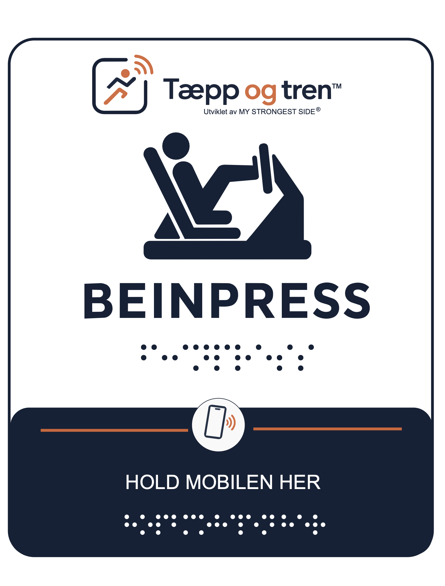

My Strongest Side®-treningssystemet
Tæpp og tren™
Tæpp mobilen på merket på apparatet, og få veiledning steg for steg mens du står ved apparatet.
- Gratis tjeneste
- Tilpasset ulike behov
- Første apparat: beinpress

Slik virker det
Tre steg fra tæpp til trening
-
Tæpp
Hold mobilen mot merket som sitter på apparatet.
-
Følg stegene
Film og korte tekster viser oppsettet, ett steg om gangen.
-
Tren
Ett lett oppvarmingssett og tre arbeidssett med pause.
Tilpasset deg
Veiledning som passer måten du trener på
-
Fra rullestol
Egen veiledning for forflytning fra rullestol til beinpress.
-
Tren én side
Egen veiledning når du trener med ett bein.
-
Treningsutstyr
Kan lånes gratis. Veiledningen viser hva du kan hente i resepsjonen.
-
Noe som er vanskelig?
Velg hva som er vanskelig, og få forslag til tilpasning.
Visning og støtte
Du velger hvordan skjermen skal se ut
- Les opp
- Høy kontrast
- Større tekst
- Tydeligere knapper
- Dysleksivennlig skrift
- Tekstavstand
Ett steg om gangen. Ikke tidspress. Ingen lydeffekter. Stoppknappen står alltid nederst, og du kan stoppe når som helst.
For treningssentre
My Strongest Side-godkjente sentre
- Universell utforming
- Tydelig merking av utvalgte apparater
- Trygg oppfølging og tilrettelegging
Løsningen bygger blant annet på metodeboken til NorCP, Norsk kvalitets- og oppfølgingsregister for cerebral parese. Tæpp og tren gir ingen helsefaglig vurdering.